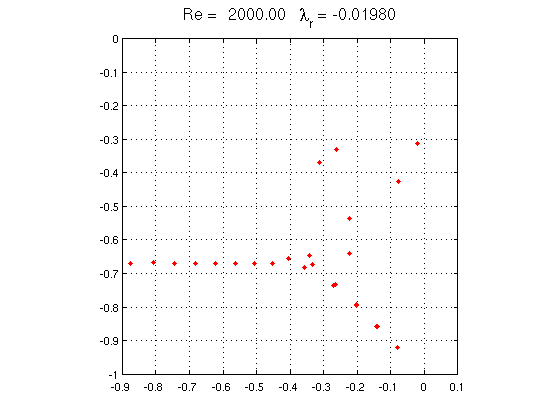
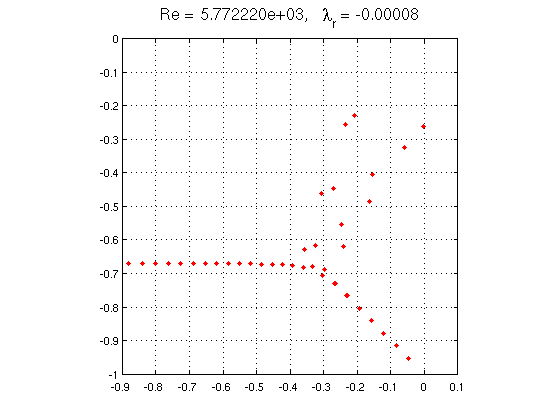

Orr-Sommerfeld eigenvalues
Toby Driscoll and Nick Trefethen, October 2010
(Chebfun example ode-eig/OrrSommerfeld.m)
The Orr-Sommerfield problem is a classic problem from the field of hydrodynamic stability. In the simplest case it models the flow of a Newtonian fluid between two infinite plates, governed by the Navier-Stokes equations. The Reynolds number Re is a nondimensional parameter corresponding roughly to velocity divided by viscosity. For any value of Re there is a smooth ("laminar") solution to the Navier-Stokes equations, but the stability, and hence the observability, of this solution is a delicate and much-studied question. In practice one observes instability and transition to turbulence when Re is in the thousands or higher.
The Orr-Sommerfeld operator is the linear operator that maps infinitesimal perturbations on the laminar flow to their infinitesimal growth rates. Classically speaking we expect the flow to be stable if all the eigenvalues of L lie in the left half-plane, and unstable if there are any eigenvalues in the right half-plane.
The following Chebfun code computes the rightmost 50 eigenvalues of L for Re=2000. This mathematical formulation, due to Reddy and Henningson and described in Appendix A of [1], involves a fourth order complex generalized eigenvalue problem.
Re = 2000; % Reynolds number alpha = 1; % longitudinal Fourier parameter A = chebop(-1,1); A.op = @(x,u) (diff(u,4)-2*diff(u,2)+u)/Re - 2i*u - 1i*diag(1-x.^2)*(diff(u,2)-u); B = chebop(-1,1); B.op = @(x,u) diff(u,2) - u; A.lbc = @(u) [u , diff(u)]; A.rbc = @(u) [u , diff(u)]; e = eigs(A,B,50,'LR'); FS = 'fontsize'; MS = 'markersize'; maxe = max(real(e)); plot(e,'.r',MS,16), grid on, axis([-.9 .1 -1 0]), axis square title(sprintf('Re = %8.2f \\lambda_r = %7.5f',Re,maxe),FS,16)
(The eigenvalues on the lower-right branch are near-degenerate pairs.) Here is the same computation for Re = 5772.22, the critical value at which an eigenvalue first crosses into the right half-plane:
Re = 5772.22; alpha = 1.02; A.op = @(x,u) (diff(u,4)-2*diff(u,2)+u)/Re - 2i*u - 1i*diag(1-x.^2)*(diff(u,2)-u); e = eigs(A,B,50,'LR'); maxe = max(real(e)); plot(e,'.r',MS,16), grid on, axis([-.9 .1 -1 0]), axis square title(['Re = ' sprintf('%5d',Re) ... ', \lambda_r = ' sprintf('%7.5f',maxe)],FS,16)
Although the Orr-Sommerfeld equation is very famous, this eigenvalue analysis actually has little to do with what makes fluid flows unstable in practice, and it is difficult to see the number 5772.22 in the laboratory [2].
References:
[1] P. J. Schmid and D. S. Henningson, Stability and Transition in Shear Flows, Springer, 2001.
[2] L. N. Trefethen and M. Embree, Spectra and Pseudospectra: The Behavior of Nonnormal Matrices and Operators, Princeton U. Press, 2005.